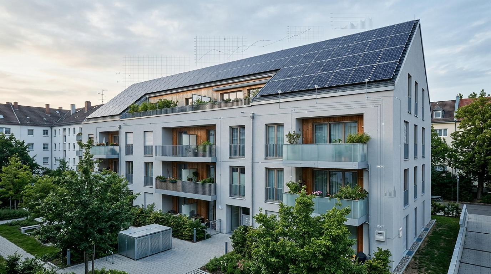

Mieterstrom digitale Abrechnung im Bestand: Effizienz steigern

TL;DR
Digitale Mieterstrommodelle ermöglichen eine effiziente und präzise Abrechnung im Gebäudebestand. Sie senken administrative Kosten und steigern die Zufriedenheit von Mietern durch transparente Preisgestaltung. Die Implementierung erfordert eine sorgfältige Planung der technischen Infrastruktur und Datenprozesse.
Die dezentrale Energieerzeugung gewinnt im Gebäudebestand an Bedeutung. Insbesondere Mieterstrommodelle bieten Mehrwert, bergen aber auch Herausforderungen bei der Abrechnung. Dieser Artikel beleuchtet, wie digitale Lösungen die Komplexität reduzieren und Rentabilität sichern.
Die Evolution des Mieterstroms: Von der Nische zur Notwendigkeit
Mieterstrommodelle, die es ermöglichen, Solarstrom direkt an Mieter zu verkaufen, sind seit der Novellierung des Erneuerbare-Energien-Gesetzes (EEG) ein immer wichtigeres Instrument zur Steigerung der Energieeffizienz und zur Förderung erneuerbarer Energien in Mehrfamilienhäusern. Ursprünglich eher als Nischenangebot betrachtet, werden diese Modelle zunehmend zur Standardoption für Neubau- und Sanierungsprojekte. Die Vorteile für Mieter liegen auf der Hand: Günstigerer Strom als vom Energieversorger und ein Beitrag zur Energiewende. Für Immobilieneigentümer und -betreiber eröffnen sich neue Erlösströme und eine verbesserte Attraktivität des Gebäudes, insbesondere im Hinblick auf ESG-Kriterien.
Die Herausforderung lag und liegt oft in der administrativen Komplexität der Abrechnung. Traditionelle manuelle Prozesse sind fehleranfällig, zeitaufwendig und mit hohen Kosten verbunden, insbesondere wenn eine große Anzahl von Verbrauchern innerhalb eines Gebäudes bedient werden muss. Die Notwendigkeit einer effizienten, datengestützten Lösung, die den regulatorischen Anforderungen gerecht wird, ist hierfür ausschlaggebend.
Digitale Abrechnung: Kernstück moderner Mieterstrommodelle
Das Herzstück eines jeden erfolgreichen Mieterstrommodells im Gebäudebestand ist eine digitale Abrechnungssoftware. Diese Systeme automatisieren die Erfassung, Verarbeitung und Verrechnung der Verbrauchsdaten. Intelligente Zähler (Smart Meter) oder moderne Messeinrichtungen sind hierfür die essenzielle Grundlage. Sie liefern minutengenaue oder zumindest tagesaktuelle Verbrauchsdaten, die direkt an die Abrechnungsplattform übermittelt werden. Dies minimiert manuelle Eingriffe und Fehlerquellen.
Die digitale Abrechnung ermöglicht eine präzise Zuordnung des erzeugten Mieterstroms zu den einzelnen Verbrauchern. Algorithmen können auf Basis von Einspeise- und Verbrauchsdaten die genauen Mengen ermitteln, die tatsächlich von den Mietern bezogen und vom öffentlichen Netz bezogen wurden. Dies ist entscheidend für die korrekte Anwendung der gesetzlichen Vorgaben, wie beispielsweise die EEG-Umlagebefreiung für den Mieterstromanteil. Die Transparenz gegenüber dem Mieter wird ebenfalls erhöht, da Abrechnungen detaillierter und nachvollziehbarer dargestellt werden können.
- Automatische Datenerfassung über intelligente Messsysteme.
- Präzise Verbrauchsermittlung und -zuordnung.
- Regulatorische Konformität durch automatisierte Prozessführung.
- Schaffung von Kostentransparenz für Mieter und Betreiber.
Technische Infrastruktur und Datenmanagement
Die Implementierung einer digitalen Mieterstromabrechnung erfordert eine robuste technische Infrastruktur. Neben den bereits erwähnten intelligenten Zählern sind Kommunikationsschnittstellen und eine zentrale Datenbank für die Datenaggregation notwendig. Die Auswahl der richtigen Hard- und Software ist entscheidend. Hierbei muss auch die Skalierbarkeit der Lösungen bedacht werden, um zukünftige Erweiterungen oder eine größere Anzahl von angeschlossenen Gebäuden abdecken zu können. Zu den gängigen Technologien zählen LoRaWAN, NB-IoT oder auch Powerline-Kommunikation für die Datenübertragung. Die Datenhaltung muss datenschutzkonform erfolgen, was insbesondere bei sensiblen Verbrauchsdaten von hoher Bedeutung ist.
Ein wesentlicher Aspekt ist die Schnittstellenanbindung. Die Abrechnungssoftware muss mit den Messdatendienstleistern (MDL), dem Netzbetreiber und gegebenenfalls mit hausinternen CAFM-Systemen (Computer-Aided Facility Management) kommunizieren können. Die Datenqualität ist dabei von höchster Relevanz. Stichprobenartige Prüfungen und Validierungsroutinen in der Software helfen, Inkonsistenzen frühzeitig zu erkennen und zu beheben. Die Kosten für die technische Basisausstattung variieren stark je nach Umfang und gewähltem System, liegen aber typischerweise im Bereich von wenigen hundert bis zu einigen tausend Euro pro Wohneinheit für die Erstinstallation, plus laufenden Kosten für Datenübertragung und Softwarewartung.
Wirtschaftlichkeit und Kostensenkungspotenziale
Die digitale Mieterstromabrechnung senkt signifikant die operativen Kosten im Vergleich zu manuellen oder teilautomatisierten Prozessen. Typische Einsparungen bei den Prozesskosten pro Abrechnung können im Bereich von 20-50% liegen, abhängig vom Ausgangsniveau. Dies resultiert aus der Reduzierung des manuellen Aufwands für Dateneingabe, Rechnungsstellung und Klärung von Rückfragen. Die Automatisierung vermeidet auch kostspielige Fehler bei der Ermittlung von Verbrauchsanteilen und der korrekten Anwendung von Abgaben und Umlagen.
Zusätzlich zu den direkten Kosteneinsparungen steigert die Effizienz die Kundenzufriedenheit. Mieter erhalten schnellere und transparentere Abrechnungen. Die Möglichkeit, den Mieterstromtarif attraktiver zu gestalten, ohne die eigene Marge zu schmälern, kann die Mieterbindung stärken und die Attraktivität der Immobilie erhöhen. Langfristig können die initialen Investitionen in digitale Systeme durch diese Effizienzgewinne und die erhöhte Mieterakzeptanz schnell amortisiert werden. Studien von Verbänden wie der dena (Deutsche Energie-Agentur) zeigen, dass die Rentabilität von Mieterstromprojekten durch optimierte Abrechnungsprozesse signifikant gesteigert werden kann.
Herausforderungen und Zukunftsperspektiven
Trotz der klaren Vorteile gibt es bei der Einführung digitaler Mieterstrommodelle auch Herausforderungen. Dazu zählen die anfänglichen Investitionskosten fürhard- und Software, die Notwendigkeit der Integration in bestehende IT-Systeme und die Schulung des Personals. Die Komplexität der regulatorischen Rahmenbedingungen, die sich ändern können, erfordert flexible und anpassungsfähige Systeme. Auch die Akzeptanz der Mieter für Smart Meter und die damit verbundene Datenerfassung muss aktiv gefördert werden.
Die Zukunft der Mieterstromabrechnung liegt in der weiteren Vernetzung und Intelligenz. Die Integration mit Energiemanagementsystemen, Ladeinfrastrukturen für E-Mobilität und lokalen Stromspeichern wird die Effizienz weiter steigern. Predictive Analytics kann helfen, Verbrauchsspitzen vorherzusagen und die Netzstabilität zu verbessern. Die Digitalisierung von Mieterstrommodellen ist somit nicht nur ein Werkzeug zur Optimierung des Bestandsgeschäfts, sondern auch ein wichtiger Baustein für die Energiewende im urbanen Raum.
Häufige Fragen
Welchen technischen Aufwand bedeutet die Umstellung auf digitale Mieterstromabrechnung im Bestand?
Die Umstellung erfordert typischerweise die Installation intelligenter Zähler oder moderner Messeinrichtungen und die Einrichtung einer Kommunikationsinfrastruktur. Je nach Gebäudealter und Bestand können hierfür bauliche Maßnahmen notwendig sein. Die Kosten sind stark variabel, oft im Bereich von mehreren hundert Euro pro Wohneinheit für die Hardware, plus laufende Kosten für Datenübertragung und Software.
Wie wirkt sich digitale Mieterstromabrechnung auf die Kosten für den Gebäudebetreiber aus?
Direkte Kostensenkungen ergeben sich durch die Automatisierung und Reduzierung manueller Prozesse, oft im Bereich von 20-50% der bisherigen Prozesskosten pro Abrechnung. Indirekte Vorteile sind höhere Mieterzufriedenheit und eine verbesserte Attraktivität der Immobilie.
Müssen alle Mieter zustimmen, um ein digitales Mieterstrommodell im Bestand umzusetzen?
Die Zustimmung aller Mieter ist in der Regel nicht zwingend erforderlich, aber eine breite Akzeptanz ist für den Erfolg entscheidend. Insbesondere die Installation von Zählern erfordert in der Regel die Zustimmung des Mieters. Transparente Kommunikation über die Vorteile für die Mieter ist hierbei essenziell.
Welche datenschutzrechtlichen Aspekte sind bei der digitalen Mieterstromabrechnung zu beachten?
Die Erfassung und Verarbeitung von Verbrauchsdaten unterliegt strengen Datenschutzbestimmungen (DSGVO). Es müssen geeignete technische und organisatorische Maßnahmen implementiert werden, um die Daten zu schützen und Transparenz gegenüber den Mietern zu gewährleisten. Die Datenübermittlung muss verschlüsselt erfolgen und die Speicherfristen eingehalten werden.